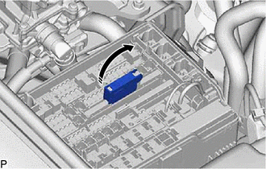
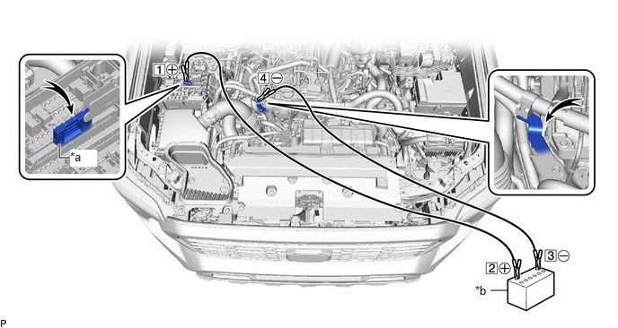

| Last Modified: 12-09-2025 | 6.11:8.1.0 | Doc ID: RM100000002KANX |
| Model Year Start: 2024 | Model: Tacoma HV | Prod Date Range: [03/2024 - ] |
| Title: T24A-FTS (BATTERY / CHARGING): AUXILIARY BATTERY (for 1Motor-HEV Model): WHEN AUXILIARY BATTERY IS DISCHARGED; 2024 - 2026 MY Tacoma HV [03/2024 - ] | ||
WHEN AUXILIARY BATTERY IS DISCHARGED
WHEN AUXILIARY BATTERY IS DISCHARGED
NOTICE:
Never use a quick charger.
HINT:
-
The following problems indicate that the auxiliary battery is discharged:
- No display appears on the instrument panel when the ignition switch is turned to ON.
- The hybrid system does not start.
- The headlights are dim.
- The sound from the horn is weak.
- The booster terminal cannot be used to rescue a vehicle with a discharged auxiliary battery.
(a) Set the shift position to P (park) and engage the parking brake.
(b) Make sure to carry the electrical key transmitter sub-assembly and check that the ignition switch is off.
(c) Remove the No. 1 relay block cover.
Click here
![2024 - 2026 MY Tacoma Tacoma HV [03/2024 - ]; POWER DISTRIBUTION: INTEGRATION RELAY: REMOVAL+](../../../../stylegraphics/info.gif)
(d) Open the booster terminal cover.


|
Open in this Direction |
(e) Using booster cables, connect the 12 V auxiliary battery of the rescue vehicle to the auxiliary battery of the stalled vehicle as shown in the illustration.
|
*a |
Booster Terminal |
*b |
Auxiliary Battery of Rescue Vehicle |
|
Connecting Sequence |
Connecting Location |
|---|---|
|
1 |
Booster terminal of stalled vehicle |
|
2 |
Positive (+) auxiliary battery terminal of rescue vehicle |
|
3 |
Negative (-) auxiliary battery terminal of rescue vehicle |
|
4 |
Position shown in the illustration on stalled vehicle |
(f) Start the engine of the rescue vehicle and run its engine a slightly elevated speed for approximately 5 minutes in order to charge the auxiliary battery of the stalled vehicle.
(g) With the ignition switch off, open and close any door.
(h) With the engine of the rescue vehicle being run at a slightly elevated speed, turn the ignition switch to ON (READY) from ON to start the hybrid system. [*1]
NOTICE:
Immediately disconnect the booster cables in the reverse order of connection after the hybrid system has started.
HINT:
- If the hybrid system does not start even after the auxiliary battery returns to normal, ensure the shift position is P (park) and repeat the procedure from [*1].
-
When disconnecting and reconnecting the auxiliary battery, there is an automatic learning function that completes learning when the respective system is used.
Click here
|
|
|